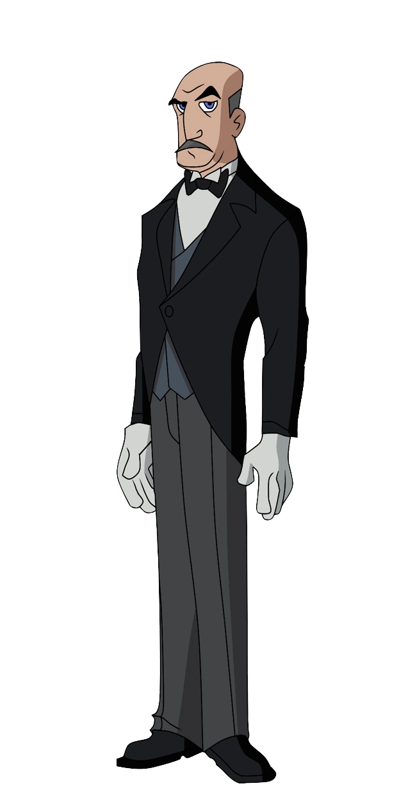

Alfred Pennyworth è raffigurato come il fedele e instancabile maggiordomo, tutore legale, migliore amico e figura paterna surrogata di Bruce Wayne in seguito agli
omicidi di Thomas e Martha Wayne . In quanto maggiordomo britannico di formazione classica ed ex dirigente delle operazioni speciali,
membro onorevole ed etico con collegamenti all'interno della comunità dell'intelligence, è stato chiamato " il batman di Batman ".
Serve come ancora morale di Bruce, facendo allo stesso tempo da comic relief con il suo atteggiamento sarcastico e cinico. Parte vitale del mito di Batman.
